A
Aprende
Facilitar el uso de la banca móvil y las billeteras digitales, reduciendo dudas, temor y resistencia.
Una campaña para que pequeños comerciantes y bodegueros pierdan el miedo a lo digital, paso a paso y con acompañamiento.
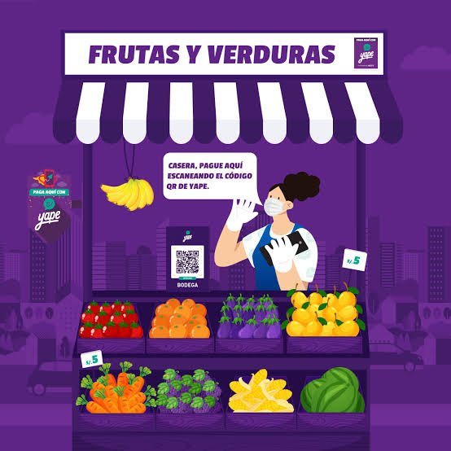
Tres verbos que resumen todo el recorrido del comerciante, dichos sin tecnicismos.
“No tienes que aprenderlo todo de una vez. Conoce la herramienta, aprende paso a paso, confía en su seguridad y úsala cuando la necesites.”
Facilitar el uso de la banca móvil y las billeteras digitales, reduciendo dudas, temor y resistencia.
Recibir pagos con QR en Yape de forma rápida y sencilla, para facilitar las ventas del negocio.
Ampliar las formas de pago y ordenar la gestión del comercio, dependiendo menos del efectivo.
Cercano, sencillo, motivador, tranquilizador y práctico. Se apoya en testimonios e imágenes de comerciantes reales como prueba social y se aleja del tono frío de la banca tradicional.
Mensaje complementario: “Aprende a tu ritmo: te acompañamos en cada paso para que cobres más fácil, sin dejar de sentirte seguro.”
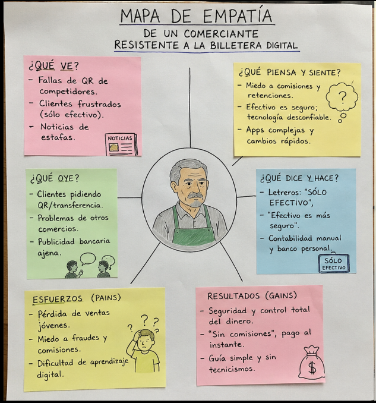
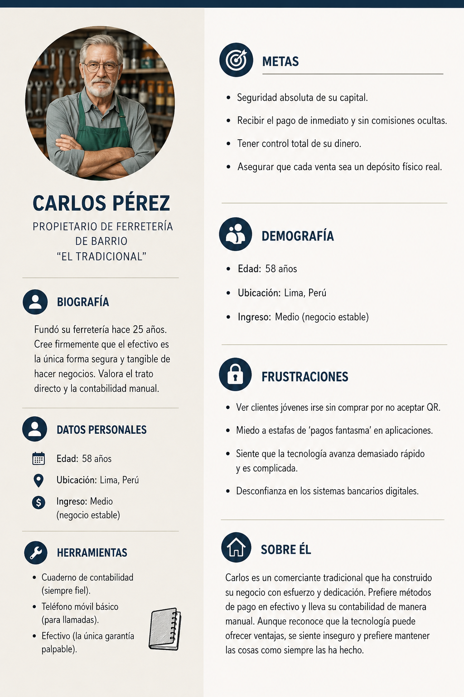
La brecha no es tecnológica, es de comunicación: el banco ya tiene las herramientas, pero el comerciante no las entiende ni confía en ellas.
Comerciantes de mercado, gremiales y emprendedores con baja o media adopción digital. El perfil central: el bodeguero que usa efectivo, prefiere la atención presencial y duda de las herramientas digitales.
Combina acciones digitales y presenciales, con aliados como asociaciones y sindicatos de comerciantes, federaciones, mercados, municipalidades e instituciones de educación financiera.
Presentar las herramientas de forma sencilla.
Enseñar cómo hacer operaciones básicas.
Reducir temores y reforzar la seguridad.
Incorporar lo digital a la rutina del negocio.
Incrementar la comprensión y confianza de los comerciantes en las herramientas y canales digitales de BCP Bolivia.
Conocimiento de las herramientas y canales digitales disponibles.
Confianza en el uso de los canales digitales.
Dudas y dificultades para elegir y usar cada canal.
Uso real de las herramientas digitales.
Cada beneficio responde a una barrera concreta detectada en el diagnóstico.
Tutoriales, infografías, videos y guías sencillas explican qué canal usar y cómo, de manera clara y práctica.
Demostraciones, acompañamiento inicial, preguntas frecuentes y testimonios reducen el miedo a equivocarse.
No se plantea un cambio inmediato: el proceso gradual Conoce, Aprende, Confía y Usa respeta el ritmo del comerciante.
Talleres y alianzas con gremios y mercados llevan al banco a los lugares donde el comerciante trabaja.
| Situación identificada | Respuesta del plan | Beneficio esperado |
|---|---|---|
| Falta de conocimiento | Tutoriales, infografías y guías | Mayor comprensión |
| Miedo a equivocarse | Demostraciones y acompañamiento | Mayor confianza |
| Resistencia al cambio | Proceso gradual: Conoce, Aprende, Confía y Usa | Menor resistencia |
| No sabe qué canal usar | Guía “¿Qué canal necesito?” | Elección más clara |
| Temor a fraudes | Educación en seguridad y prevención | Mayor percepción de seguridad |
| Falta de acompañamiento | Talleres y alianzas con gremios | Mayor cercanía y soporte |
| Uso predominante del efectivo | Activaciones y demostraciones de pagos digitales | Mayor adopción digital |
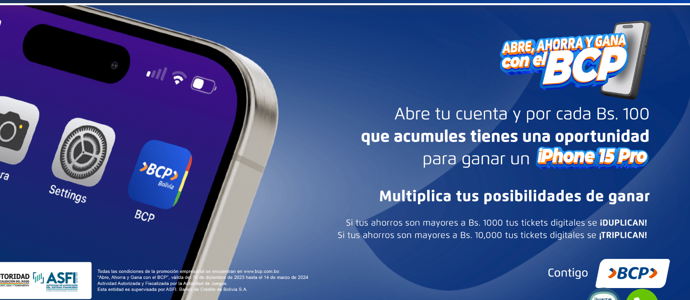
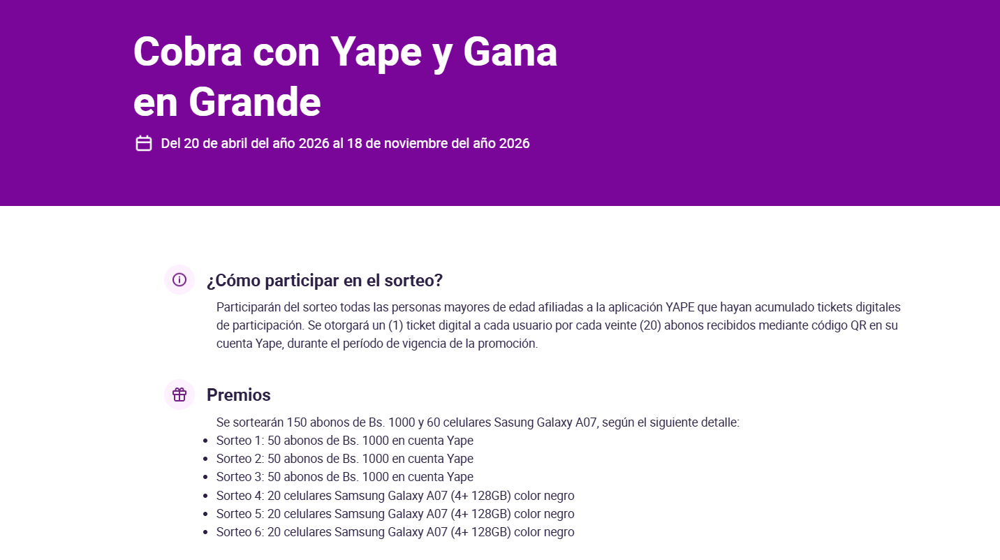
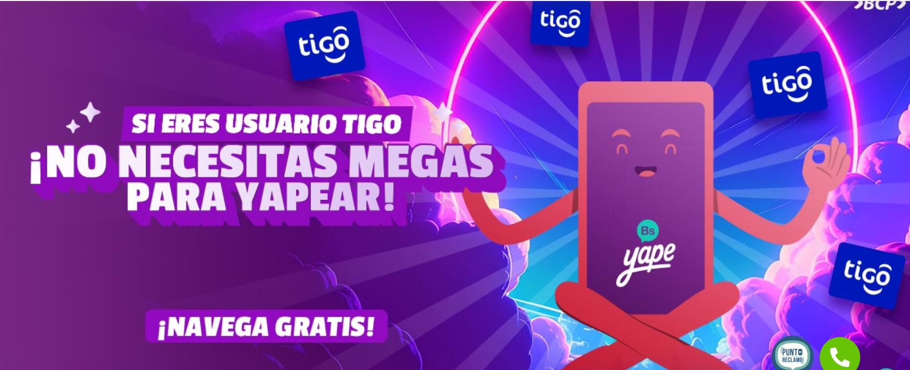
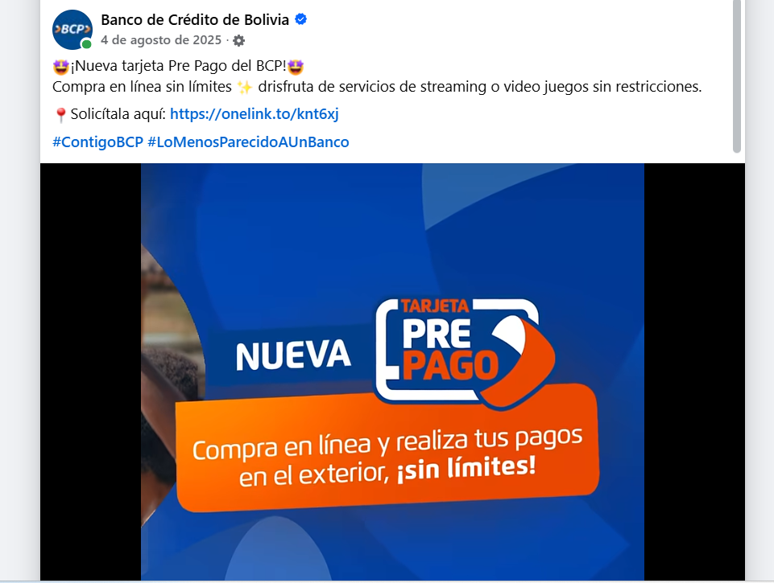
Seis acciones concretas, cada una pensada para resolver un problema del comerciante.
Videos cortos, infografías, piezas para redes, material impreso y códigos QR que explican qué herramienta usar, cómo y de forma segura.
Atiende: la falta de conocimiento.
Guía visual que relaciona necesidades frecuentes del comerciante con el canal correcto, con ejemplos cotidianos.
Atiende: la confusión entre canales.
Talleres presenciales en mercados, asociaciones, sindicatos y centros comerciales populares.
Atiende: la percepción de que lo digital es difícil o impersonal.
Mensajes sobre prevención de fraudes, protección de claves y canales oficiales de ayuda.
Atiende: el temor a fraudes y errores.
Alianzas con gremios, mercados, municipalidades e instituciones de educación financiera.
Atiende: el alcance y la cercanía.
Atención humana, sin bots, que resuelve dudas a cualquier hora.
Atiende: la escucha limitada.
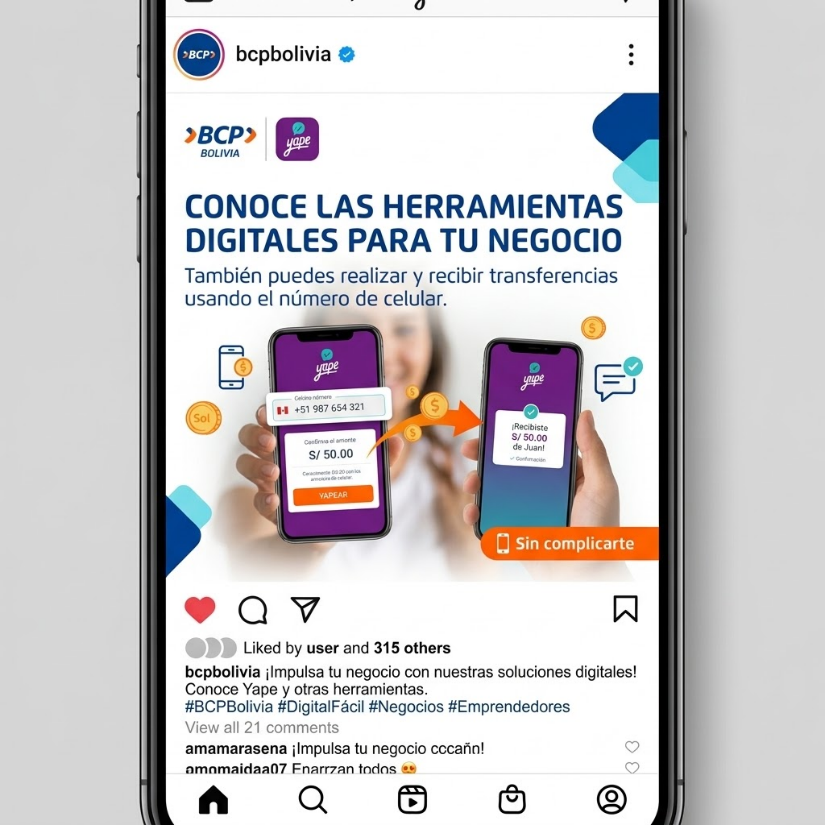

Que el comerciante entienda mejor los canales, perciba menos riesgo y se sienta más cerca del BCP.
Los comerciantes conocen y entienden los canales digitales disponibles.
Baja el miedo al fraude y al error al usar herramientas digitales.
Se fortalece la relación entre el comerciante y el BCP.
Cada plataforma cumple una función distinta dentro del recorrido del comerciante.
| Estrategia | Medios | Herramientas y formatos |
|---|---|---|
| Educación | Facebook y YouTube | Carruseles, infografías, Reels/Shorts y tutoriales |
| Demostración | Instagram, Facebook y YouTube | Videos verticales de 30–60 s, tutoriales de 1–3 min, serie “Aprende en 1 minuto” |
| Testimonios | Instagram y Facebook | Reels, Stories y publicaciones; serie “Yo también tenía dudas” |
| Personalización | WhatsApp Business | Mensajes segmentados, respuestas rápidas, imágenes-guía y enlaces |
| Remarketing | Instagram y Facebook → WhatsApp Business | Anuncios y Stories dirigidos a quienes ya interactuaron, con llamados a la acción |
Canal donde el comerciante ya interactúa. Sus publicaciones se pueden guardar y volver a consultar.
Reels y Stories breves, ideales para demostraciones cortas y testimonios cercanos.
Repositorio de tutoriales que se ven a su propio ritmo, tantas veces como haga falta.
Aporta el acompañamiento personal que este público valora; es el punto de llegada del remarketing.
Cinco estrategias que acompañan al comerciante desde que conoce la herramienta hasta que la usa. Incluimos remarketing como estrategia de conversión.
Enseñar de manera simple y práctica cómo funcionan las herramientas digitales con contenidos paso a paso, preguntas frecuentes, consejos y guías.
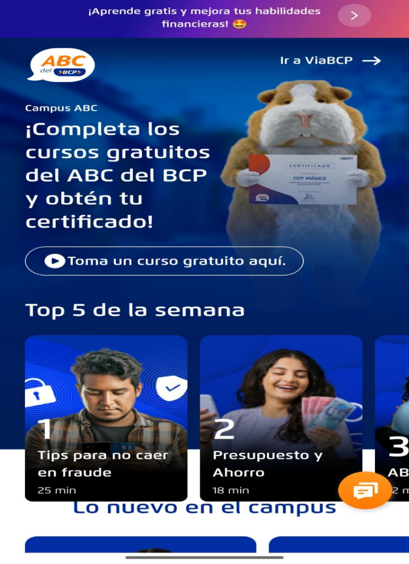

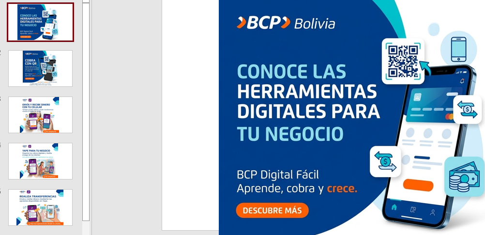
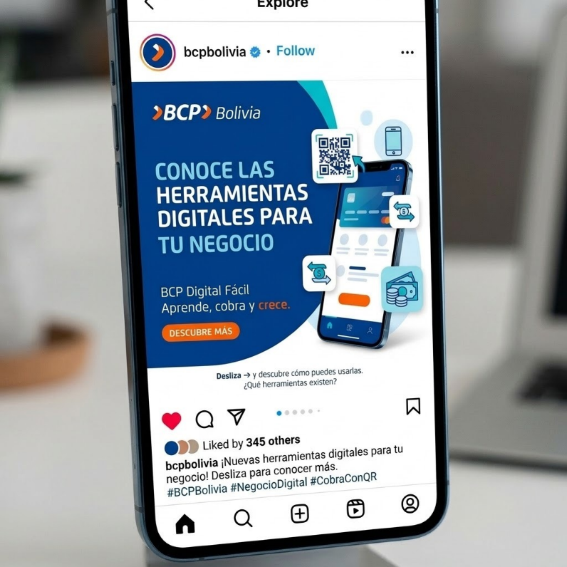
“Mostrar > decir”. Videos y tutoriales que enseñan a cobrar o hacer una operación en situaciones cotidianas, una acción por escena.
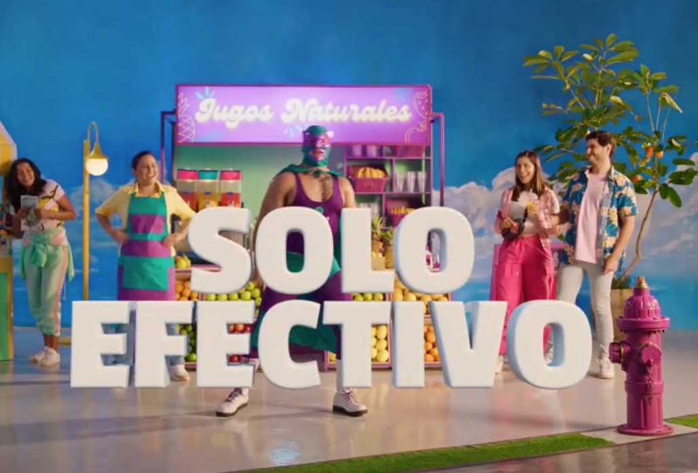
Experiencias reales de comerciantes parecidos al público objetivo, para generar identificación y confianza. Serie “Yo también tenía dudas”.


Mensajes adaptados a situaciones concretas: “¿Quieres cobrar con QR?”, “¿Cómo reconocer un fraude?”. Cada pieza lleva un llamado a la acción claro.
Volver a comunicarse con quienes ya vieron un contenido, con un mensaje relacionado y un siguiente paso claro: “Mira la guía”, “Solicita orientación”, “Da el primer paso”.

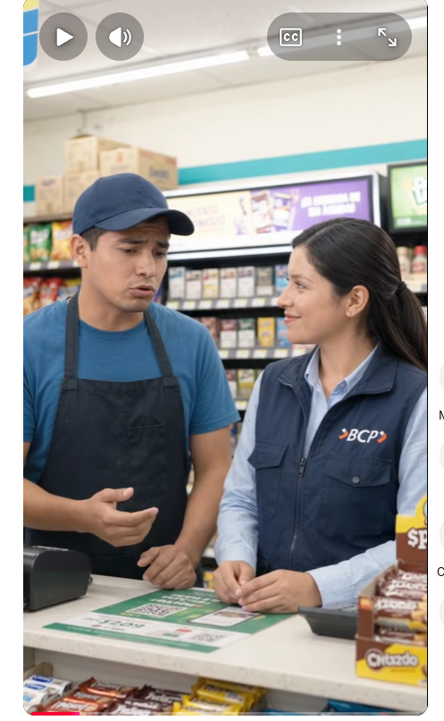
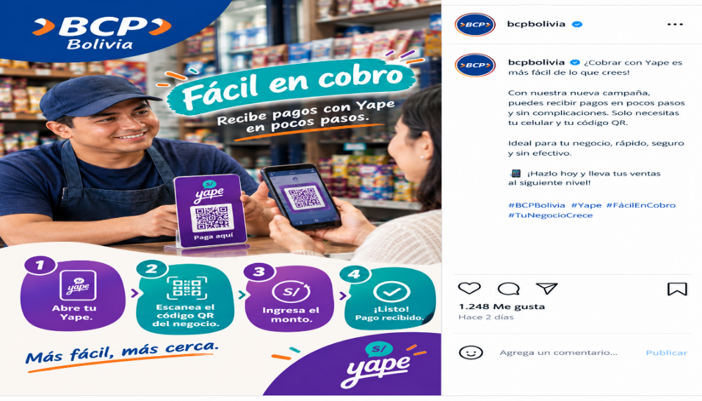
24 semanas (del 5 de octubre de 2026 al 15 de marzo de 2027), con una pieza principal por semana.
Alcance. Personalización: guía “¿Qué canal necesito?” y orientación inicial por WhatsApp.
Consideración. Educación, demostración y testimonios en Facebook, Instagram y YouTube.
Conversión. Remarketing: anuncios, Stories, carruseles y seguimiento por WhatsApp.
Medición continua de alcance, reproducciones, consultas y acciones para ajustar sobre la marcha.
| Semana | Etapa | Estrategia | Medio | Contenido |
|---|---|---|---|---|
| S1 · 05/10/2026 | Alcance | Personalización | Facebook / Instagram | Guía interactiva “¿Qué canal necesito para mi negocio?” |
| S2 · 12/10 | Alcance | Personalización | Post con guía: soluciones digitales según necesidad | |
| S3 · 19/10 | Alcance | Personalización | Mensaje directo: orientación inicial | |
| S4 · 26/10 | Consideración | Educación | Facebook / Instagram | Carrusel: herramientas digitales BCP |
| S5 · 02/11 | Consideración | Educación | Instagram / YouTube | Video corto: introducción a la banca digital |
| S6 · 09/11 | Consideración | Educación | Infografía: buenas prácticas de seguridad digital | |
| S7 · 16/11 | Consideración | Educación | Instagram / YouTube | Video tutorial: uso paso a paso de BCP Digital |
| S8 · 23/11 | Consideración | Demostración | Reel: demostración rápida de cobro/pago | |
| S9 · 30/11 | Consideración | Educación | Lista: preguntas frecuentes | |
| S10 · 07/12 | Consideración | Demostración | YouTube | Video completo: tutorial de operación |
| S11 · 14/12 | Consideración | Demostración | Instagram / Facebook | Video corto: demostración práctica en negocios |
| S12 · 21/12 | Consideración | Educación | Reel: errores frecuentes al cobrar y cómo evitarlos | |
| S13 · 28/12 | Consideración | Demostración | YouTube | Video tutorial: funciones complementarias |
| S14 · 04/01/2027 | Consideración | Testimonios | Instagram / Facebook | Imagen / cita: testimonio de un comerciante |
| S15 · 11/01 | Consideración | Educación | Infografía: claves de protección en transacciones | |
| S16 · 18/01 | Consideración | Testimonios | Reel: historia de experiencia de un usuario | |
| S17 · 25/01 | Consideración | Educación | YouTube | Video: respuestas a dudas recurrentes |
| S18 · 01/02 | Consideración | Demostración | Instagram / Facebook | Video interactivo: demostración + tips de seguridad |
| S19 · 08/02 | Conversión | Remarketing | Facebook / Instagram | Anuncio pago para quienes ya interactuaron |
| S20 · 15/02 | Conversión | Remarketing | Story interactiva con enlace directo (CTA) | |
| S21 · 22/02 | Conversión | Remarketing | Carrusel: “3 pasos para empezar hoy” | |
| S22 · 01/03 | Conversión | Remarketing | Reel: “Solicita orientación personalizada” | |
| S23 · 08/03 | Conversión | Remarketing | Mensaje directo: seguimiento uno a uno | |
| S24 · 15/03 | Conversión | Remarketing | Facebook / Instagram / WhatsApp | Publicación multicanal: recordatorio final |
Con educación, demostración, testimonios, personalización y remarketing, acompañamos al comerciante para que aprenda, use y adopte lo digital con más seguridad y confianza.